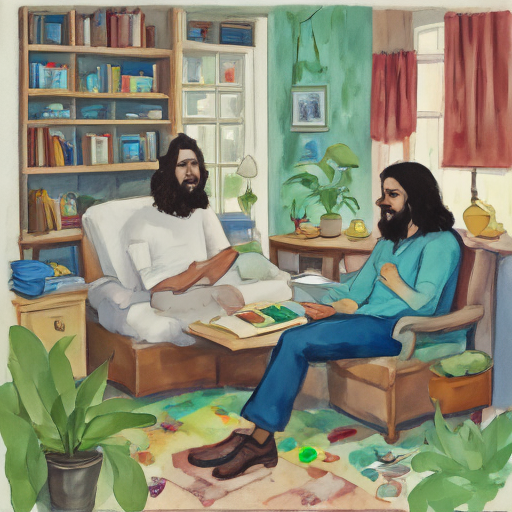

Today I woke up in my cozy little apartment, feeling surprisingly at home after a week-long trip to South America. The thought of the Home Office seemed miles away as I flipped through old magazines and watched reruns of Russell Brand's latest comedy show on the tablet by the window. It was moments like these that reminded me how much I loved coming back to my real life and all its quirks.

Keywords: Home Office, Russell Brand, South America
Fictional diary entry.